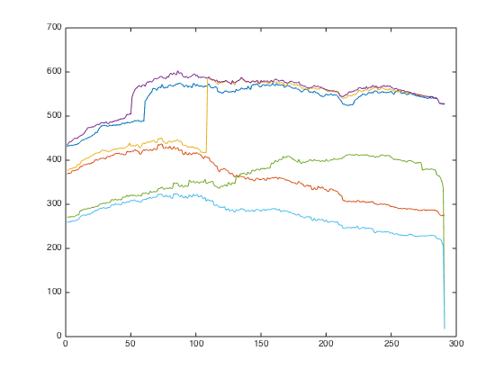
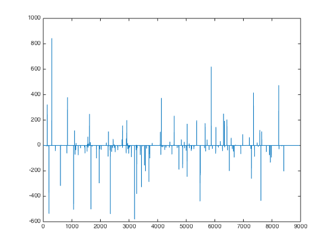

Combined Factors - Large dataset
Let's check out what happens when I use a much larger dataset.
Contents
1000 securities
Let's load the data from ..
load('../data_equity_list_us.mat'); load('../data_field_list.mat'); load('../data_historical_data_us.mat'); load('../rfr_ts.mat'); load('../cap_benchmark_ts.mat'); load('../spx_ts.mat');
take data sample, load data & the list
index = datasample(1:1300,1000,'Replace',false);
px = fun_load_price(history_us, equity_list_us, index);
px = fun_clean_data(px);
list = equity_list_us(index,:);
Baseline case - no momentum normalization, no fillts
load observations
mom_ts = fun_calculate_mom(px); pb_ts = fun_load_observations(history_us, equity_list_us, index,'pb'); cap_ts = fun_load_observations(history_us, equity_list_us, index,'cap'); beta_ts = fun_load_observations(history_us, equity_list_us, index,'beta'); grossmargin_ts = fun_load_observations(history_us, equity_list_us, index,'gm'); turnover_ts = fun_load_observations(history_us, equity_list_us, index,'turnover'); roa_ts = fun_load_observations(history_us, equity_list_us, index,'roa'); leverage_ts = fun_load_observations(history_us, equity_list_us, index,'leverage');
calculate score
score_mom_ts = fun_calculate_score(mom_ts,list,'sectorsort',px); score_pb_ts = -fun_calculate_score(pb_ts,list,'sectorsort',px); score_cap_ts = -fun_calculate_score(cap_ts,list,'sectorsort',px); score_beta_ts = -fun_calculate_score(beta_ts,list,'sectorsort',px); score_leverage_ts = -fun_calculate_score(leverage_ts,list,'sectorsort',px); score_roa_ts = fun_calculate_score(roa_ts,list,'sectorsort',px); score_grossmargin_ts = fun_calculate_score(grossmargin_ts,list,'sectorsort',px); score_turnover_ts = fun_calculate_score(turnover_ts,list,'sectorsort',px); % score_leverage_ts = fillts(score_leverage_ts,0); % score_roa_ts = fillts(score_roa_ts,0); % score_grossmargin_ts = fillts(score_grossmargin_ts,0); % score_turnover_ts = fillts(score_turnover_ts,0); score_quality_ts = score_leverage_ts+score_roa_ts+score_grossmargin_ts+score_turnover_ts; score_quality_ts = fun_combine_score(score_quality_ts);
Trim
score_roa_ts = score_roa_ts(75:end); score_leverage_ts = score_leverage_ts(75:end); score_grossmargin_ts = score_grossmargin_ts(75:end); score_turnover_ts = score_turnover_ts(75:end); score_mom_ts = score_mom_ts(75:end); score_pb_ts = score_pb_ts(75:end); score_cap_ts = score_cap_ts(75:end); score_beta_ts = score_beta_ts(75:end); score_quality_ts = score_quality_ts(75:end); % score_mom_ts = fillts(score_mom_ts,0); % score_pb_ts = fillts(score_pb_ts,0); % score_cap_ts = fillts(score_cap_ts,0); % score_beta_ts = fillts(score_beta_ts,0); % score_quality_ts = fillts(score_quality_ts,0); score_ts = {score_mom_ts; score_pb_ts; score_cap_ts; score_beta_ts; score_quality_ts}; px = px(75:end);
Combine score
score_weight = [0.2 0 0.4 0.1 0.3]; score_combined_ts = score_mom_ts*score_weight(1) + score_pb_ts*score_weight(2) + score_cap_ts*score_weight(3) + score_beta_ts*score_weight(4) + score_quality_ts*score_weight(5); score_combined_ts = fun_combine_score(score_combined_ts);
There is much less securites than you expeced.
figure(2); score_mat = fts2mat(score_mom_ts); score_mat(not(isnan(score_mat)))=1; plot(nansum(score_mat,2)); hold on; score_mat = fts2mat(score_pb_ts); score_mat(not(isnan(score_mat)))=1; plot(nansum(score_mat,2)); hold on; score_mat = fts2mat(score_cap_ts); score_mat(not(isnan(score_mat)))=1; plot(nansum(score_mat,2)); hold on; score_mat = fts2mat(score_beta_ts); score_mat(not(isnan(score_mat)))=1; plot(nansum(score_mat,2)); hold on; score_mat = fts2mat(score_quality_ts); score_mat(not(isnan(score_mat)))=1; plot(nansum(score_mat,2)); hold on; score_mat = fts2mat(score_combined_ts); score_mat(not(isnan(score_mat)))=1; plot(nansum(score_mat,2)); hold off; snapnow;
Benchmark
portfolio_weight_eq_weight_ts = fun_portfolio_weight_sector_neutral(score_combined_ts,'equalweight'); portfolio_rt_ts = fun_portfolio_return(px, portfolio_weight_eq_weight_ts); benchmark = [100; 100*exp(fts2mat(cumsum(portfolio_rt_ts)))]; benchmark_ts = fints(px.dates, benchmark,'EqualWeightIndex');
Performance
portfolio_weight_ts = fun_portfolio_weight_sector_neutral(score_combined_ts,'longonly'); portfolio_capital_ts = fun_sequential_backtest_surgical_debug(100000, px, benchmark_ts, rfr_ts, portfolio_weight_ts,list,1, 0, false,150,1,false,false,true); figure(1); plot(log(portfolio_capital_ts)); hold on; snapnow; fun_performance_meansure(portfolio_capital_ts,benchmark_ts,true); portfolio_weight_ts = fun_portfolio_weight_sector_neutral(score_combined_ts,'longonly'); portfolio_capital_ts = fun_sequential_backtest_surgical_debug(100000, px, benchmark_ts, rfr_ts, portfolio_weight_ts,list,1, 0.5, false,150,1,false,false,true); figure(1); plot(log(portfolio_capital_ts)); hold on; snapnow; fun_performance_meansure(portfolio_capital_ts,benchmark_ts,true); figure show_audit_trail(px,benchmark_ts,list);
sharpe ratio is 0.98
vol is 0.19
return is 0.18
correlation with benchmark_ts is
1.0000 0.9676
0.9676 1.0000
sharpe ratio is 1.13
vol is 0.10
return is 0.11
correlation with benchmark_ts is
1.0000 0.8870
0.8870 1.0000

ans =
'NEU US Equity'
'REGN US Equity'
'PCLN US Equity'
'CBRL US Equity'
'SIAL US Equity'
'CHKP US Equity'
'ALXN US Equity'
'DDS US Equity'
'MFE US Equity'
'SHW US Equity'
'FDO US Equity'
'NVDA US Equity'
'SANM US Equity'
'PCP US Equity'
'AN US Equity'
'PLL US Equity'
'FMC US Equity'
'IFF US Equity'
'PRGO US Equity'
'BCR US Equity'
ans =
'AN US Equity'
'NVDA US Equity'
'REGN US Equity'
'KG US Equity'
'2724Q US Equity'
'CKFR US Equity'
'3424335Q US Equity'
'MFE US Equity'
'EDCI US Equity'
'WOR US Equity'
0.1868 0.1863
-0.0729 0.0959
0.1139 0.0961
ans =
0.6986
ans =
1.0043
ans =
1.1863
8000 securities
Retrieve the big data
load('../Big Data/data_equity_list.mat'); load('../Big Data/data_historical_data_jan16.mat'); equity_list = equity_list(1:size(storage0,1),:); equity_list_large = equity_list(strcmp(equity_list(:,2),'US'),:); history_large = storage0(strcmp(equity_list(:,2),'US'),:); clear storage0; clear equity_list; equity_list_large = equity_list_large(not(cellfun(@isempty,history_large(:,1))),:); history_large = history_large(not(cellfun(@isempty,history_large(:,1))),:);
take data sample, load data & the list
index_large = datasample(1:length(equity_list_large),length(equity_list_large),'Replace',false);
px_large = fun_load_price_large(history_large, equity_list_large, index_large);
px = fun_clean_data(px_large);
list = equity_list_large(index_large,:);
load observations
mom_ts = fun_calculate_mom(px_large); pb_ts = fun_load_observations_large(history_large, equity_list_large, index_large,'pb'); cap_ts = fun_load_observations_large(history_large, equity_list_large, index_large,'cap'); beta_ts = fun_load_observations_large(history_large, equity_list_large, index_large,'beta'); grossmargin_ts = fun_load_observations_large(history_large, equity_list_large, index_large,'gm'); turnover_ts = fun_load_observations_large(history_large, equity_list_large, index_large,'turnover'); roa_ts = fun_load_observations_large(history_large, equity_list_large, index_large,'roa'); leverage_ts = fun_load_observations_large(history_large, equity_list_large, index_large,'leverage');
calculate score
score_mom_ts = fun_calculate_score(mom_ts,list,'sectorsort',px); score_pb_ts = -fun_calculate_score(pb_ts,list,'sectorsort',px); score_cap_ts = -fun_calculate_score(cap_ts,list,'sectorsort',px); score_beta_ts = -fun_calculate_score(beta_ts,list,'sectorsort',px); score_leverage_ts = -fun_calculate_score(leverage_ts,list,'sectorsort',px); score_roa_ts = fun_calculate_score(roa_ts,list,'sectorsort',px); score_grossmargin_ts = fun_calculate_score(grossmargin_ts,list,'sectorsort',px); score_turnover_ts = fun_calculate_score(turnover_ts,list,'sectorsort',px); score_quality_ts = score_leverage_ts+score_roa_ts+score_grossmargin_ts+score_turnover_ts; score_quality_ts = fun_combine_score(score_quality_ts);
Trim
score_mom_ts = score_mom_ts(120:end-5);
score_pb_ts = score_pb_ts(120:end-5);
score_cap_ts = score_cap_ts(120:end-5);
score_beta_ts = score_beta_ts(120:end-5);
score_quality_ts = score_quality_ts(120:end-5);
score_ts = {score_mom_ts; score_pb_ts; score_cap_ts; score_beta_ts; score_quality_ts};
px = px(120:end-5);
Combine score
score_weight = [0.2 0 0.4 0.1 0.3]; score_combined_ts = score_mom_ts*score_weight(1) + score_pb_ts*score_weight(2) + score_cap_ts*score_weight(3) + score_beta_ts*score_weight(4) + score_quality_ts*score_weight(5); score_combined_ts = fun_combine_score(score_combined_ts);
There is much less securites than you expeced.
figure(2) score_mat = fts2mat(score_mom_ts); score_mat(not(isnan(score_mat)))=1; plot(nansum(score_mat,2)); hold on; score_mat = fts2mat(score_pb_ts); score_mat(not(isnan(score_mat)))=1; plot(nansum(score_mat,2)); hold on; score_mat = fts2mat(score_cap_ts); score_mat(not(isnan(score_mat)))=1; plot(nansum(score_mat,2)); hold on; score_mat = fts2mat(score_beta_ts); score_mat(not(isnan(score_mat)))=1; plot(nansum(score_mat,2)); hold on; score_mat = fts2mat(score_quality_ts); score_mat(not(isnan(score_mat)))=1; plot(nansum(score_mat,2)); hold on; score_mat = fts2mat(score_combined_ts); score_mat(not(isnan(score_mat)))=1; plot(nansum(score_mat,2)); hold off; snapnow;
Benchmark
portfolio_weight_eq_weight_ts = fun_portfolio_weight_sector_neutral(score_combined_ts,'equalweight'); portfolio_rt_ts = fun_portfolio_return(px, portfolio_weight_eq_weight_ts); benchmark = [100; 100*exp(fts2mat(cumsum(portfolio_rt_ts)))]; benchmark_ts = fints(px.dates, benchmark,'EqualWeightIndex');
Performance
portfolio_weight_ts = fun_portfolio_weight_sector_neutral(score_combined_ts,'longonly'); portfolio_capital_ts = fun_sequential_backtest_surgical_debug(100000, px, benchmark_ts, rfr_ts, portfolio_weight_ts,list,1, 0, false,150,1,false,false,true); figure(1); plot(log(portfolio_capital_ts)); hold on; snapnow; fun_performance_meansure(portfolio_capital_ts,benchmark_ts,true); portfolio_weight_ts = fun_portfolio_weight_sector_neutral(score_combined_ts,'longonly'); portfolio_capital_ts = fun_sequential_backtest_surgical_debug(100000, px, benchmark_ts, rfr_ts, portfolio_weight_ts,list,1, 0.5, false,150,1,false,false,true); figure(1); plot(log(portfolio_capital_ts)); hold on; snapnow; fun_performance_meansure(portfolio_capital_ts,benchmark_ts,true); portfolio_weight_ts = fun_portfolio_weight_sector_neutral(score_combined_ts,'longonly'); portfolio_capital_ts = fun_sequential_backtest_surgical_debug(100000, px, benchmark_ts, rfr_ts, portfolio_weight_ts,list,1, 0.5, false,450,1,false,false,true); figure(1); plot(log(portfolio_capital_ts)); hold on; snapnow; fun_performance_meansure(portfolio_capital_ts,benchmark_ts,true);
sharpe ratio is 1.08
vol is 0.21
return is 0.22
correlation with benchmark_ts is
1.0000 0.9379
0.9379 1.0000
sharpe ratio is 1.44
vol is 0.11
return is 0.15
correlation with benchmark_ts is
1.0000 0.8004
0.8004 1.0000
sharpe ratio is 1.17
vol is 0.11
return is 0.12
correlation with benchmark_ts is
1.0000 0.8922
0.8922 1.0000
8000 securities with fillts
take data sample, load data & the list
index_large = datasample(1:length(equity_list_large),length(equity_list_large),'Replace',false);
px_large = fun_load_price_large(history_large, equity_list_large, index_large);
px = fun_clean_data(px_large);
list = equity_list_large(index_large,:);
load observations
mom_ts = fun_calculate_mom(px_large); pb_ts = fun_load_observations_large(history_large, equity_list_large, index_large,'pb'); cap_ts = fun_load_observations_large(history_large, equity_list_large, index_large,'cap'); beta_ts = fun_load_observations_large(history_large, equity_list_large, index_large,'beta'); grossmargin_ts = fun_load_observations_large(history_large, equity_list_large, index_large,'gm'); turnover_ts = fun_load_observations_large(history_large, equity_list_large, index_large,'turnover'); roa_ts = fun_load_observations_large(history_large, equity_list_large, index_large,'roa'); leverage_ts = fun_load_observations_large(history_large, equity_list_large, index_large,'leverage');
calculate score
score_mom_ts = fun_calculate_score(mom_ts,list,'sectorsort',px); score_pb_ts = -fun_calculate_score(pb_ts,list,'sectorsort',px); score_cap_ts = -fun_calculate_score(cap_ts,list,'sectorsort',px); score_beta_ts = -fun_calculate_score(beta_ts,list,'sectorsort',px); score_leverage_ts = -fun_calculate_score(leverage_ts,list,'sectorsort',px); score_roa_ts = fun_calculate_score(roa_ts,list,'sectorsort',px); score_grossmargin_ts = fun_calculate_score(grossmargin_ts,list,'sectorsort',px); score_turnover_ts = fun_calculate_score(turnover_ts,list,'sectorsort',px); score_leverage_ts = fillts(score_leverage_ts,0); score_roa_ts = fillts(score_roa_ts,0); score_grossmargin_ts = fillts(score_grossmargin_ts,0); score_turnover_ts = fillts(score_turnover_ts,0); score_quality_ts = score_leverage_ts+score_roa_ts+score_grossmargin_ts+score_turnover_ts; score_quality_ts = fun_combine_score(score_quality_ts);
Trim
score_mom_ts = score_mom_ts(120:end-5);
score_pb_ts = score_pb_ts(120:end-5);
score_cap_ts = score_cap_ts(120:end-5);
score_beta_ts = score_beta_ts(120:end-5);
score_quality_ts = score_quality_ts(120:end-5);
score_mom_ts = fillts(score_mom_ts,0);
score_pb_ts = fillts(score_pb_ts,0);
score_cap_ts = fillts(score_cap_ts,0);
score_beta_ts = fillts(score_beta_ts,0);
score_quality_ts = fillts(score_quality_ts,0);
score_ts = {score_mom_ts; score_pb_ts; score_cap_ts; score_beta_ts; score_quality_ts};
px = px(120:end-5);
Combine score
score_weight = [0.2 0 0.4 0.1 0.3]; score_combined_ts = score_mom_ts*score_weight(1) + score_pb_ts*score_weight(2) + score_cap_ts*score_weight(3) + score_beta_ts*score_weight(4) + score_quality_ts*score_weight(5); score_combined_ts = fun_combine_score(score_combined_ts);
There is much less securites than you expeced.
figure(2) score_mat = fts2mat(score_mom_ts); score_mat(not(isnan(score_mat)))=1; plot(nansum(score_mat,2)); hold on; score_mat = fts2mat(score_pb_ts); score_mat(not(isnan(score_mat)))=1; plot(nansum(score_mat,2)); hold on; score_mat = fts2mat(score_cap_ts); score_mat(not(isnan(score_mat)))=1; plot(nansum(score_mat,2)); hold on; score_mat = fts2mat(score_beta_ts); score_mat(not(isnan(score_mat)))=1; plot(nansum(score_mat,2)); hold on; score_mat = fts2mat(score_quality_ts); score_mat(not(isnan(score_mat)))=1; plot(nansum(score_mat,2)); hold on; score_mat = fts2mat(score_combined_ts); score_mat(not(isnan(score_mat)))=1; plot(nansum(score_mat,2)); hold off; snapnow;
Benchmark
portfolio_weight_eq_weight_ts = fun_portfolio_weight_sector_neutral(score_combined_ts,'equalweight'); portfolio_rt_ts = fun_portfolio_return(px, portfolio_weight_eq_weight_ts); benchmark = [100; 100*exp(fts2mat(cumsum(portfolio_rt_ts)))]; benchmark_ts = fints(px.dates, benchmark,'EqualWeightIndex');
Performance
portfolio_weight_ts = fun_portfolio_weight_sector_neutral(score_combined_ts,'longonly'); portfolio_capital_ts = fun_sequential_backtest_surgical_debug(100000, px, benchmark_ts, rfr_ts, portfolio_weight_ts,list,1, 0, false,150,1,false,false,true); figure(1); plot(log(portfolio_capital_ts)); hold on; snapnow; fun_performance_meansure(portfolio_capital_ts,benchmark_ts,true); figure; show_audit_trail(px,benchmark_ts,list); portfolio_weight_ts = fun_portfolio_weight_sector_neutral(score_combined_ts,'longonly'); portfolio_capital_ts = fun_sequential_backtest_surgical_debug(100000, px, benchmark_ts, rfr_ts, portfolio_weight_ts,list,1, 0.5, false,150,1,false,false,true); figure(1); plot(log(portfolio_capital_ts)); hold on; snapnow; fun_performance_meansure(portfolio_capital_ts,benchmark_ts,true); figure; show_audit_trail(px,benchmark_ts,list); portfolio_weight_ts = fun_portfolio_weight_sector_neutral(score_combined_ts,'longonly'); portfolio_capital_ts = fun_sequential_backtest_surgical_debug(100000, px, benchmark_ts, rfr_ts, portfolio_weight_ts,list,1, 0.5, false,450,1,false,false,true); figure(1); plot(log(portfolio_capital_ts)); hold off; snapnow; fun_performance_meansure(portfolio_capital_ts,benchmark_ts,true); figure; show_audit_trail(px,benchmark_ts,list); portfolio_weight_ts = fun_portfolio_weight_sector_neutral(score_combined_ts,'longonly'); portfolio_capital_ts = fun_sequential_backtest_surgical_debug(100000, px, spx_ts, rfr_ts, portfolio_weight_ts,list,2.25, 0.7, false,150,1,false,false,true); figure(1); plot(log(portfolio_capital_ts)); hold off; snapnow; fun_performance_meansure(portfolio_capital_ts,benchmark_ts,true); figure; show_audit_trail(px,benchmark_ts,list);

sharpe ratio is 1.19
vol is 0.19
return is 0.23
correlation with benchmark_ts is
1.0000 0.9316
0.9316 1.0000


ans =
'TPL US Equity'
'TZOO US Equity'
'TNH US Equity'
'APFC US Equity'
'IBCP US Equity'
'RGR US Equity'
'ASPS US Equity'
'MKTX US Equity'
'LL US Equity'
'SPA US Equity'
'APAGF US Equity'
'JBSS US Equity'
'SKX US Equity'
'APOG US Equity'
'CBM US Equity'
'ACET US Equity'
'SGC US Equity'
'BLLI US Equity'
'TLKGY US Equity'
'OILT US Equity'
ans =
'ICTPU US Equity'
'ADLR US Equity'
'TZOO US Equity'
'HDYN US Equity'
'RDN US Equity'
'IRC US Equity'
'XAND US Equity'
'ASUR US Equity'
'CAPI US Equity'
'OSTK US Equity'
0.2342 0.1920
0 0
0.2342 0.1920
ans =
0.6770
ans =
1.2221
ans =
1.2221
sharpe ratio is 1.54
vol is 0.10
return is 0.16
correlation with benchmark_ts is
1.0000 0.7869
0.7869 1.0000

ans =
'TZOO US Equity'
'TPL US Equity'
'TNH US Equity'
'APFC US Equity'
'RGR US Equity'
'IBCP US Equity'
'ASPS US Equity'
'LL US Equity'
'APAGF US Equity'
'MKTX US Equity'
'SPA US Equity'
'ACET US Equity'
'APOG US Equity'
'JBSS US Equity'
'GPOR US Equity'
'SGMZ US Equity'
'SKX US Equity'
'CBM US Equity'
'WRLD US Equity'
'PLKI US Equity'
ans =
'ICTPU US Equity'
'ADLR US Equity'
'TZOO US Equity'
'HDYN US Equity'
'RDN US Equity'
'IRC US Equity'
'XAND US Equity'
'ASUR US Equity'
'CAPI US Equity'
'OSTK US Equity'
0.2337 0.1918
-0.0689 0.0998
0.1648 0.1034
ans =
0.6770
ans =
1.2203
ans =
1.5960
sharpe ratio is 1.33
vol is 0.10
return is 0.14
correlation with benchmark_ts is
1.0000 0.8745
0.8745 1.0000
ans =
'TPL US Equity'
'TZOO US Equity'
'TNH US Equity'
'IDIX US Equity'
'ECOL US Equity'
'LL US Equity'
'RDN US Equity'
'RGR US Equity'
'APFC US Equity'
'ACET US Equity'
'SKX US Equity'
'DXCM US Equity'
'IBCP US Equity'
'SPA US Equity'
'APAGF US Equity'
'MKTX US Equity'
'TARO US Equity'
'JBSS US Equity'
'GPOR US Equity'
'CACC US Equity'
ans =
'IDIX US Equity'
'IDCC US Equity'
'ICTPU US Equity'
'ADLR US Equity'
'TZOO US Equity'
'HDYN US Equity'
'PRK US Equity'
'RDN US Equity'
'AN US Equity'
'HSNI US Equity'
0.2237 0.1965
-0.0702 0.0994
0.1536 0.1039
ans =
0.6770
ans =
1.1406
ans =
1.4807
sharpe ratio is 1.23
vol is 0.27
return is 0.33
correlation with benchmark_ts is
1.0000 0.4940
0.4940 1.0000
 

ans =
'TPL US Equity'
'ITSI US Equity'
'APFC US Equity'
'TZOO US Equity'
'TNH US Equity'
'IBCP US Equity'
'RGR US Equity'
'ASPS US Equity'
'MKTX US Equity'
'LL US Equity'
'SPA US Equity'
'APAGF US Equity'
'SGMZ US Equity'
'OILT US Equity'
'BLLI US Equity'
'APOG US Equity'
'JBSS US Equity'
'CBM US Equity'
'PZZA US Equity'
'ACET US Equity'
ans =
'ICTPU US Equity'
'ADLR US Equity'
'TZOO US Equity'
'HDYN US Equity'
'RDN US Equity'
'IRC US Equity'
'XAND US Equity'
'ITSI US Equity'
'ASUR US Equity'
'CAPI US Equity'
0.5278 0.4325
-0.1766 0.3192
0.3512 0.2684
ans =
0.5019
ans =
1.2223
ans =
1.3107
a few observations with large dataset
- the selected securities become much more irratic once sub 1 billion company is admitted, in fact the top 10 is totally different from when the candidacy is controlled at 1000. Company such as LL and Sturm & Ruger are included in 8000 case.
- 450 security make the transaction cost unacceptably high... apparently not practical with sub 1mio capital.
- the hedge capital seems very high compare to equity capital.? this is due to the fact that 8000 security equal weight benchmark vol is only 8% (?), is that right? This seems warrant a separate investigation.
Conclusion